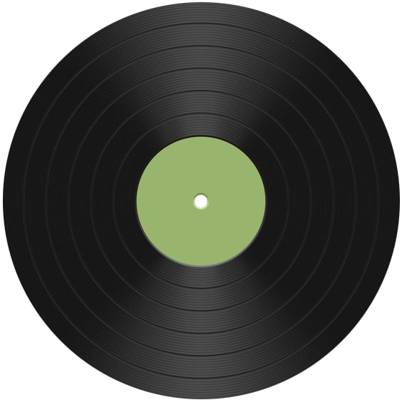
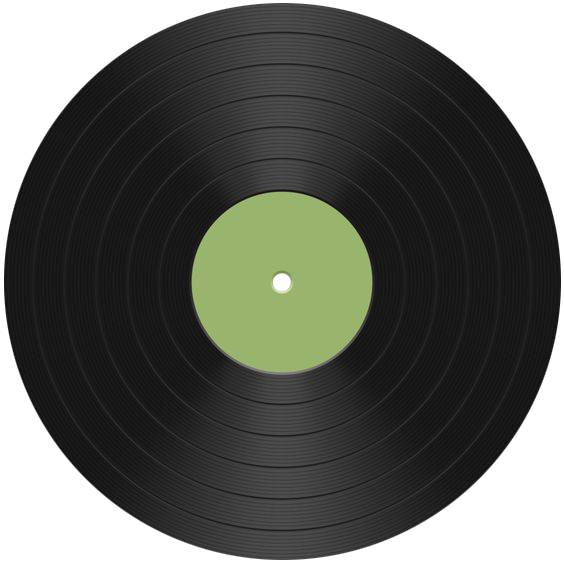

1935s
馬丁·布洛克 被認為是創造「DJ」(disc jockey) 這個詞的人，1935年，他在WNEW電台開始了「Make Believe Ballroom」節目播放唱片，並假裝自己在一個舞廳中廣播，這種創新方式迅速流行，影響了後來的電台DJ。

1940s
早期的DJ主要在電台和場館中播放唱片，點唱機的發明讓更多人可以在公共場所聽到音樂。
1950s
在1950年代，艾倫·弗里德在克里夫蘭和紐約市的電台中推廣搖滾樂，被稱為「搖滾之父」。他的節目和現場演出吸引了大量年輕聽眾。
1960s
DJ在夜總會和舞廳中變得越來越受歡迎，成為了舞會和社交活動的核心。這時期的DJ開始影響音樂的播放方式，成為社交活動的重要組成部分。

1970s
嘻哈音樂的誕生Herc在紐約布朗克斯舉辦派對，使用兩台唱機交替播放音樂，創造了嘻哈音樂的基礎。他的創新技術如「breakbeat」成為嘻哈音樂的核心元素。
1980s
電子音樂的興起:芝加哥的House音樂和底特律的Techno音樂逐漸流行，電子音樂和DJ文化開始席捲全球。這些音樂風格重塑了夜生活和舞池文化。

2000s-2024s
DJ音樂風格經歷了顯著的變化和演變。電子舞曲（EDM）的崛起成為主流，融合了浩室（House）、浩室舞曲（Trance）、電音（Electro）和電子流行（Electropop）等多種電子音樂流派，以高能量的節奏和震撼的合成器聲音吸引了大量年輕聽眾。浩室音樂變得更加多樣化，出現了Deep House、Progressive House、Future House等子類型，並且涌現出許多新興的DJ和製作人。流行音樂和電子音樂的界限變得越來越模糊，許多流行歌手與DJ合作，創作出了大量熱門單曲，例如Calvin Harris與Rihanna合作的《We Found Love》，David Guetta與Sia合作的《Titanium》。重低音和陷阱音樂（Trap）的流行，特別是在2000年代後期和2010年代早期迅速崛起，這些風格以重低音和複雜的鼓點著稱，成為了音樂節和夜店的熱門曲風。